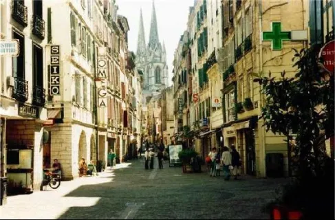

MTVM - Chương 10

Chương 10
Buổi sáng trời trong xanh, mấy con phố trong thị trấn được người ta vẩy nước mát, và tất cả chúng tôi dùng bữa sáng trong quán café. Bayonne là một thị trấn xinh đẹp. Nó mang dáng vẻ của một thị trấn Tây Ban Nha vô cùng sạch sẽ và nó nằm bên một con sông lớn. Ngay từ sáng sớm, cây cầu bắc qua dòng sông đã phả ra hơi nóng. Chúng tôi đi qua cầu rồi vào dạo thị trấn.
Tôi không dám chắc rằng cần câu của Mike sẽ được chuyển đến đúng hẹn từ Scotland, nên chúng tôi tìm tới một cửa hàng dụng cụ và cuối cùng cũng mua được cho Bill một cái cần câu ở tầng trên của hàng đồ khô. Người bán hàng đi ra ngoài, và chúng tôi phải đợi ông ta quay trở lại. Cuối cùng ông ta cũng quay về, và chúng tôi mua được một cái cần câu tốt với giá khá rẻ, cùng với hai cái lưới.
Chúng tôi lại bước xuống đường và ghé vào thăm quan một thánh đường. Cohn có lời nhận xét rằng nó là một ví dụ tốt về cái gì đó hoặc cái khác, mà tôi đã quên béng mất. Đó dường như là một thánh đường đẹp, đẹp và tối, giống như những nhà thờ ở trên đất Tây Ban Nha. Rồi chúng tôi đi lên, vượt qua một pháo đài cũ và qua Văn phòng thông tin du lịch địa phương, nơi trung chuyển của các chuyến xe buýt. Ở đó họ nói với chúng tôi rằng dịch vụ xe buýt sẽ không bắt đầu hoạt động cho tới ngày mùng 1 tháng Bảy. Chúng tôi tìm thấy một văn phòng du lịch mà chúng tôi có thể thuê xe tới Pamplona và thuê một chiếc ở một garage lớn ngay góc Nhà hát thành phố với giá bốn trăm franc. Chiếc xe sẽ đón chúng tôi tại khách sạn trong bốn mươi phút nữa, và chúng tôi dừng lại ở quán café trên quảng trường nơi chúng tôi dùng bữa sáng, sẵn sàng cho một chầu bia. Trời nóng, nhưng thị trấn phảng phất không khí mát mẻ, tươi mới của buổi sớm mai và được ngồi trong quán café như thế này thật là dễ chịu. Gió nhẹ bắt đầu thổi, và ta có thể cảm nhận được hương vị đến từ biển cả. Có mấy con bồ câu trên quảng trường, và những ngôi nhà có màu vàng đã phai màu ít nhiều vì nắng gió, tôi thật tình không muốn phải rời khỏi chốn này. Nhưng chúng tôi phải quay trở về khách sạn để thu dọn đồ và trả tiền phòng. Chúng tôi trả tiền bia, chúng tôi tranh nhau và tôi nghĩ Cohn là người trả tiền, và chúng tôi đi về khách sạn. Phần của tôi và Bill chỉ có mười sáu franc, cộng với mười phần trăm phí dịch vụ, và túi của chúng tôi được mang xuống lầu trong khi đợi Robert Cohn. Khi đứng chờ tôi nhìn thấy một con gián dài ít nhất tám phân trên sàn nhà lát gỗ. Tôi chỉ cho Bill con gián rồi dí giày lên mình nó. Chúng tôi đồng tình đi đến kết luận rằng con gián này chắc mới chui vào từ khu vườn. Còn khách sạn này vẫn là một chốn sạch sẽ khủng khiếp.
Cuối cùng thì, Cohn cũng xuất hiện, và tất cả chúng tôi ra xe. Đó là một chiếc xe kín, to lớn, với người tài xế mặc bộ quần áo trắng ám bụi có cổ xanh và tay áo xắn lên, và ông ta kéo nắp sau của xe xuống. Ông ta xếp túi vào xe và chúng tôi bắt đầu rời khỏi con phố và ra khỏi thị trấn. Chúng tôi lướt qua những khu vườn xinh đẹp và có thể nhìn bao quát cả thị trấn, và rồi chúng tôi tiến vào vùng nông thôn, xanh mướt và vòng vèo, và con đường cứ dốc lên suốt cả chuyến đi. Chúng tôi vượt qua rất nhiều người Basque[1] với những đàn bò, lũ gia súc, những xe thồ dọc đường đi, rồi những ngôi nhà nông thôn xinh đẹp, thấp mái, tất cả đều trát vữa thạch cao trắng. Ở miền quê Basque đất đai thật màu mỡ và xanh tươi với những ngôi nhà và xóm làng mang dáng vẻ sung túc và sạch sẽ. Mọi xóm làng đều có sân pelota[2] và mấy đứa trẻ đang chơi đùa dưới trời nắng nóng. Có những tấm bảng được gắn trên bờ tường của nhà thờ viết rằng cấm được chơi pelota ở đây, và các ngôi nhà trong làng có mái ngói màu đỏ, và con đường rẽ ngoặt sang một hướng khác và bắt đầu dốc lên và chúng tôi đang đi sát bên sườn đồi, với một thung lũng nằm bên dưới và những ngọn đồi nối tiếp nhau ngoằn nghèo chạy ra tận biển. Anh không thể nhìn thấy biển. Nó vẫn còn cách quá xa. Anh chỉ nhìn thấy toàn đồi và rồi nối tiếp vẫn là những ngọn đồi, nhưng anh biết rất rõ biển nằm ở hướng nào.
Chúng tôi tới biên giới Tây Ban Nha. Có một dòng suối nhỏ và con cầu bắc qua nó, và đứng gác nơi đầu cầu là những người lính Tây Ban Nha đeo súng cacbin[3], với chiếc mũ da Bonaparte, và súng ngắn đeo trên lưng, ở một bên, và bên kia là một ông sĩ quan béo người Pháp có râu rậm đầu đội mũ kếp[4]. Họ chỉ mở một túi đồ và lấy hộ chiếu kiểm tra. Có một cửa hàng tạp hóa và nhà nghỉ ở mỗi bên của con đường. Người lái xe phải đi vào trong bốt gác và điền một số giấy tờ về chiếc xe và chúng tôi đi ra dòng suối để xem có cá hồi hay không. Bill cố gắng nói một ít tiếng Tây Ban Nha với một người lính cần súng cacbin, nhưng không thành công lắm. Robert Cohn hỏi, chỉ bằng ngón tay, rằng liệu dưới suối có cá hồi không, và người lính trả lời có, nhưng không nhiều.
Tôi hỏi ông ta đã đi câu cá bao giờ chưa, và ông ta trả lời chưa, do vậy ông ta chẳng bận tâm cho lắm.
Thế rồi một ông già với râu tóc dài và cháy nắng, khoác bộ quần áo nhìn như thể chúng được làm từ những chiếc bị đay, sải bước tới cây cầu. Ông mang theo một cây gậy dài, và có một đứa trẻ được đeo trên lưng ông, bốn chân của nó buộc chặt, cái đầu rũ xuống.
Người lính biên phòng vẫy ông lại bằng thanh kiếm. Ông già quay lại mà không nói lời nào, và trở lại con đường màu trắng thuộc về phần lãnh thổ Tây Ban Nha.
“Có vấn đề gì với ông già thế?”
“Ông ấy không có hộ chiếu.”
Tôi mời người lính gác một điếu thuốc. Ông ta nhận lấy và cảm ơn tôi.
“Ông ấy sẽ làm gì?” tôi hỏi.
Người lính hất hất đám bụi dưới chân mình.
“Ôi, ông ta sẽ lội qua dòng suối.”
“Ở đây có nhiều vụ buôn lậu không?”
“Ô,” ông ta nói, “họ sẽ trốn sang được hết ấy mà.”
Người lái xe bước ra, gập lại mấy tờ giấy và nhét chúng vào cái túi trên áo khoác. Chúng tôi ngồi vào xe và tiếp tục tiến lên con đường đầy bụi trắng vào Tây Ban Nha. Trong một lúc vùng nông thôn mang dáng vẻ như nó vẫn từng thế; rồi, cứ thế dốc lên, chúng tôi vượt qua một đỉnh của rặng núi Col, con đường lộng gió, và rồi Tây Ban Nha thực sự hiện ra. Những rặng núi màu nâu dài tít tắp và một vài cây thông và phía đằng xa là rừng cây sồi ở bên rìa rặng núi. Con đường kéo dài tới đỉnh của rặng Col và rồi dốc xuống, và người lái xe buộc phải bấm còi, giảm tốc, và ngoặt tay lái để tránh đâm vào hai con lừa đang nằm ngủ trên đường. Chúng tôi đi xuống núi và qua một rừng sồi, và những con gia súc màu trắng đang gặm cỏ trong khu rừng. Ở bên dưới kia là đồng bằng xanh mướt cỏ và dòng suối trong vắt, và rồi chúng tôi vượt qua dòng suối và tiến vào một khu làng nhỏ tồi tàn, và rồi tiếp tục leo cao. Chúng tôi cứ đi lên và lên và vượt qua một đỉnh núi cao khác thuộc dãy Col và đi vòng quanh nó, và rồi con đường lại dẫn xuống về bên phải, và chúng tôi nhìn thấy một rặng núi mới ở phía nam, tất cả đều có màu nâu và có vẻ như vừa mới được đưa ra từ lò nướng và nhăn nhúm theo những hình thù kỳ lạ.
Sau một lúc chúng tôi ra khỏi núi, và những hàng cây hiện ra hai bên đường, và một dòng suối và những cánh đồng lúa chín vàng, và con đường cứ kéo dài mãi, rất trắng và thẳng tắp, và con đường dốc lên một chút, và về cuối cùng bên trái là một ngọn đồi với một lâu đài cổ, và những tòa nhà kề bên và những nhịp sóng lúa vàng nổi lên trong gió nơi cánh đồng nằm ngay bên phải những bức tường. Tôi ngồi hàng ghế trước với người tài xế và tôi quay đầu lại. Robert Cohn đang ngủ, còn Bill thì nhìn tôi và gật đầu. Rồi chúng tôi vượt qua một đồng bằng rộng lớn, và một con sông lớn hiện ra dưới ánh nắng chói chang giữa những lùm cây, và ở phía xa kia ta có thể thấy thung lũng Pamplona hiện lên nơi đồng bằng, và những bức tường bao quanh thành phố, thánh đường lớn có màu nâu, và những nhà thờ khác đâm chọc bầu trời. Phía sau thung lũng là những triền núi, dù anh có nhìn ngắm theo cách nào thì tiếp đó vẫn chỉ toàn là núi, và con đường phía trước kéo dài thẳng tắp qua đồng bằng dẫn tới Pamplona.
Chúng tôi đi vào thị trấn ở phía bên kia của thung lũng, con đường dốc đứng lên và ám bụi với những hàng cây che bóng mát ở cả hai bên đường, và rồi trở nên bằng phẳng khi ra đến khu quy hoạch mới của thị trấn được xây dựng bên ngoài những bức tường cũ. Chúng tôi đi qua đấu trường, cao và trắng và vững chãi dưới nắng, và rồi đi vào một quảng trường rộng lớn men theo một con đường kề bên và dừng lại ngay trước cửa Khách sạn Montoya.
Người lái xe giúp chúng tôi dỡ hành lý xuống. Có cả một đám lố nhố những đứa trẻ vây quanh và ngắm nghía chiếc xe, và quảng trường bốc lên hơi nóng, và những tán cây thì xanh ngắt, và những lá cờ được treo trên cột cờ, và thật dễ chịu khi thoát khỏi ánh nắng chói chang và đi vào bóng râm của mái vòm chạy quanh quảng trường. Montoya mừng rỡ khi thấy chúng tôi, và bắt tay và cho chúng tôi những phòng tốt nhất có thể nhìn ra quảng trường, và rồi chúng tôi rửa ráy và tắm táp và đi xuống phòng ăn dưới lầu để dùng bữa trưa. Người lái xe cũng ở lại ăn trưa, và sau đó chúng tôi thanh toán tiền cho ông ta và ông ta lại quay về Bayonne.
Có hai phòng ăn ở Montoya. Một ở trên tầng hai và nhìn ra quảng trường. Cái kia thì ở một tầng thấp hơn so với quảng trường và có cửa mở ra con phố phía sau mà lũ bò sẽ chạy qua vào sáng sớm khi chúng được đưa tới đấu trường. Phòng ăn bên dưới luôn mát mẻ và chúng tôi có một bữa ra trò. Bữa đầu tiên ở Tây Ban Nha luôn là một sự ngạc nhiên lớn với món khai vị, một món trứng, hai món thịt, rau, và món tráng miệng cùng với hoa quả. Anh phải uống thật nhiều rượu mới có thể nuốt trôi được hết số thức ăn này. Robert Cohn cố nói rằng gã không muốn dùng món thịt thứ hai, nhưng chúng tôi không dịch lời hộ gã, và vì thế mà người phục vụ mang cho gã một thứ khác thay thế, một đĩa thịt lạnh, tôi cho là vậy. Cohn luôn tỏ ra hơi hồi hộp kể từ khi chúng tôi hội ngộ ở Bayonne. Gã không chắc liệu chúng tôi có biết rằng Brett đã cùng với gã ở San Sebastian hay không, và điều này khiến cho gã hơi ngượng nghịu.
“Ôi,” tôi nói, “Brett và Mike sẽ tới đêm nay.”
“Tôi không chắc là họ sẽ tới,” Cohn nói.
“Sao lại không?” Bill hỏi. “Chắc chắn là họ sẽ tới chứ.”
“Họ luôn trễ hẹn,” tôi giải thích.
“Tôi nghĩ là họ sẽ không tới đâu,” Robert Cohn nói.
Gã nói với cái khí thế làm ra vẻ có hiểu biết hơn khiến chúng tôi đều khó chịu.
“Tôi cá với cậu năm mươi peseta[5] là họ sẽ có mặt ở đây vào tối nay,” Bill nói. Anh luôn cá cược những khi giận dữ, và thường thì anh toàn cá những vụ ngớ ngẩn.
“Chấp nhận,” Cohn nói. “Tốt. Cậu nhớ hộ nhé, Jake. Năm mươi peseta.”
“Tự tôi sẽ nhớ,” Bill nói. Tôi thấy anh tức giận và muốn làm anh dịu lại.
“Chắc là họ sẽ tới thôi,” tôi nói. “Nhưng có lẽ không phải tối nay.”
“Có muốn rút lại không?” Cohn hỏi.
“Không. Sao tôi phải làm thế? Nếu thích thì chơi luôn một trăm.”
“Được thôi. Chơi luôn.”
“Đủ rồi,” tôi nói. “Nếu không thì các cậu phải làm một quyển sổ và đưa một ít cho tôi.”
“Tôi rất sẵn lòng,” Cohn nói. Gã mỉm cười. “Dù sao, thì cậu cũng có thể gỡ lại bằng mấy ván bài.”
“Cậu vẫn chưa cầm chắc tiền trong tay đâu,” Bill nói.
Chúng tôi bước ra ngoài và đi dọc bên dưới mái vòm tới quán Café Irũna[6] để làm một ly cà phê. Cohn bảo gã sẽ tiếp tục đi và cạo râu luôn thể.
“Bảo này,” Bill quay sang tôi, “tôi có cơ hội thắng vụ cá cược này không?”
“Cậu có ít cơ hội lắm. Họ chẳng bao giờ đúng hẹn cả. Nếu tiền của họ không tới thì họ không có mặt ở đây đêm nay đâu.”
“Tôi hối hận ngay khi vừa mở mồm. Nhưng tôi phải nói lại hắn. Hắn nói đúng, tôi nghĩ vậy, nhưng hắn lấy đâu ra cái kiểu thái độ đó kia chứ? Mike và Brett đã khẳng định với bọn mình rằng sẽ tới đây rồi cơ mà.”
Tôi thấy Cohn bước tới từ phía bên kia quảng trường.
“Hắn quay lại kìa.”
“Ồ, mình đừng để hắn trở nên ngạo mạn và đầy tính Do Thái thế.”
“Tiệm cắt tóc đóng cửa,” Cohn nói. “Bốn giờ nó mới mở.”
Chúng tôi dùng cà phê ở Irũna, ngồi trên những chiếc ghế êm ái được làm bằng liễu gai, nhìn ra ngoài quảng trường rộng lớn từ mái hiên mát mẻ. Sau một lúc Bill đi gửi vài lá thư và Cohn tới tiệm cắt tóc. Nó vẫn chưa mở cửa, nên gã quyết định quay lại khách sạn và tắm rửa, và tôi ngồi trước cửa quán café và rồi dạo quanh thị trấn. Trời thật nóng, nhưng tôi cứ bước đi ở phía có bóng râm của những hàng cây và đi qua chợ và tận hưởng một buổi chiều thú vị khi được nhìn ngắm lại thị trấn này. Tôi đi tới Ayuntamiento[7] và tìm thấy quý ông già luôn giữ vé xem đấu bò tót giúp tôi mỗi mùa giải, ông đã nhận được tiền tôi gửi từ Paris và làm mới đơn đặt hàng của tôi, nên tất cả đều đã đâu vào đấy hết. Ông là một chuyên viên lưu trữ văn thư, và tất cả giấy tờ trong thị trấn đều có mặt trong phòng làm việc của ông. Điều ấy thì chẳng liên quan gì tới câu chuyện này cả. Nhưng dù sao thì, văn phòng của ông có một cái cửa baize[8] màu xanh lá cây và một cái cửa gỗ lớn, và khi tôi rời đi tôi bỏ ông ngồi lại đó giữa những chồng giấy tờ chất đầy cả bốn bức tường, và tôi đóng cả hai cánh cửa lại, và khi tôi bước ra khỏi tòa nhà để đi xuống phố người gác cổng ngăn tôi lại để phủi bụi trên áo khoác của tôi.
“Chắc hẳn ông vừa đi trên một chiếc xe ca,” anh ta nói.
Cổ áo phía sau và phần trên vai áo bạc trắng bụi.
“Từ Bayonne.”
“Ô, ô,” anh ta nói. “Tôi biết là ông ngồi trên xe ca từ nơi đầy bụi tới đây mà.” Rồi tôi đưa anh ta đồng hai xu.
Ở cuối phố tôi nhìn thấy thánh đường và đi về phía ấy. Lần đầu tiên tôi cứ nghĩ rằng thánh đường này có mặt tiền nom thật xấu xí nhưng giờ thì tôi lại thấy thích. Tôi bước vào trong. Bên trong lờ mờ tối và các cây cột cao vút lên, và ở đó có những người đang cầu nguyện, và mùi nhang phảng phất trong không khí, và có những khung cửa sổ lớn rất đẹp. Tôi quỳ xuống và bắt đầu cầu nguyện và tôi cầu nguyện cho tất cả những người mà tôi nghĩ tới, Brett và Mike và Bill và Robert Cohn và cả tôi nữa, và tất cả các đấu sĩ bò tót, cầu nguyện riêng cho những ai tôi thích, và gộp chung những người còn lại làm một, rồi tôi lại cầu nguyện cho bản thân mình, và khi tôi đang cầu nguyện cho mình tôi thấy buồn ngủ, nên tôi cầu rằng mấy trận đấu bò sẽ thật hay, và rằng đây sẽ là một fiesta thành công, và rằng chúng tôi sẽ câu được kha khá cá. Tôi băn khoăn không biết còn điều gì mà tôi có thể cầu nguyện thêm nữa, và tôi nghĩ rằng tôi sẽ muốn có thêm một ít tiền, nên tôi cầu tôi sẽ kiếm được thật nhiều tiền, và rồi tôi bắt đầu nghĩ tới việc làm sao để đạt được điều này, và nghĩ về việc kiếm tiền lại gợi tôi nhớ tới tay Bá tước, và tôi bắt đầu suy nghĩ về việc hiện giờ ông ta đang ở đâu, và lấy làm tiếc rằng tôi chưa gặp lại ông ta kể từ đêm ở Montmartre, và về điều gì đó khôi hài mà Brett kể cho tôi nghe về ông ta, và trong suốt quãng thời gian ấy tôi quỳ gối với trán tựa vào thanh gỗ trước mặt mình, tôi nghĩ về bản thân mình đang cầu nguyện, tôi có chút hổ thẹn, và hối hận rằng tôi là một con chiên thối tha, nhưng nhận ra tôi chẳng thể làm gì đối với điều này, ít nhất là trong một thời gian, và có thể là không bao giờ cả, nhưng dù sao thì đó cũng là một thứ tôn giáo vĩ đại, và tôi chỉ ước rằng tôi cảm thấy được tinh thần tôn giáo đó và có thể là vào lần tới; và rồi tôi bước ra ngoài cái nắng nóng nơi bậc thềm của thánh đường, và ngón tay trỏ và ngón cái của bàn tay phải tôi vẫn còn ẩm ướt, và tôi cảm thấy chúng đang khô lại dưới ánh nắng. Ánh mặt trời nóng bỏng và khắc nghiệt, và tôi đi qua một số tòa nhà, và quay trở lại con đường dẫn về khách sạn.
Bữa tối đó chúng tôi tìm thấy Robert Cohn đã tắm rửa, đã cạo râu và cắt tóc và gội đầu, và có cái thứ gì đó trên tóc gã để giữ cho chúng được nguyên dạng. Gã hồi hộp, và tôi không cố gắng giúp đỡ gì cả. Chuyến tàu sẽ tới từ San Sebastian vào lúc chín giờ, và, nếu Brett cùng Mike đều đến, họ sẽ có mặt trên chuyến tàu đó. Lúc chín giờ kém hai mươi chúng tôi chưa dùng xong nửa bữa tối. Robert Cohn đứng dậy và nói rằng gã muốn ra ga. Tôi bảo rằng tôi sẽ đi cùng gã, chỉ mong được hành hạ gã. Bill thì bảo anh sẽ bị nguyền rủa nếu bỏ dở bữa tối. Tôi an ủi anh rằng chúng tôi sẽ trở về ngay.
Chúng tôi đi bộ tới nhà ga. Tôi thích thú nhìn thấy Cohn lo lắng. Tôi mong Brett sẽ đi chuyến tàu đó. Tàu tới sân ga trễ, và chúng tôi ngồi trên một chiếc xe chở hàng và đợi bên ngoài trong bóng tối. Tôi chưa bao giờ được chiêm ngưỡng một người đàn ông nào trong thời bình lại bất an như Robert Cohn – cũng như chưa từng có ai lại hào hứng đến vậy. Quả thật tôi đã được mãn nhãn. Cũng thật tệ khi thỏa mãn với những điều như thế, nhưng tôi vẫn biết rằng mình đê tiện. Cohn có cái tài năng thiên bẩm trong việc khơi dậy những điều tệ hại nhất ẩn sâu bên trong mỗi con người.
Một lúc lâu sau chúng tôi nghe tiếng còi tàu từ bên kia thung lũng, và rồi chúng tôi thấy ánh đèn tiến lên triền đồi. Chúng tôi bước vào sân ga và đứng cùng đám đông ở ngay sau cánh cửa sắt, và con tàu tiến đến và và dừng lại, và mọi người bắt đầu tràn qua cửa.
Họ không có trong đám đông. Chúng tôi chờ cho tới khi tất cả hành khách xuống tàu và ra khỏi sân ga và ngồi trên xe buýt, hoặc taxi, hoặc đi bộ cùng bạn bè và người thân của họ về thị trấn trong bóng đêm.
“Tôi biết là họ không đến mà,” Robert nói. Chúng tôi đang trên đường trở về khách sạn.
“Tôi cứ nghĩ là họ có thể sẽ đến,” tôi nói.
Bill đang ăn hoa quả khi chúng tôi quay về và đang giải quyết nốt chai rượu.
“Họ không đến à?”
“Không.”
“Cậu không phiền nếu tôi trả cậu một trăm peseta đó vào buổi sáng chứ, Cohn?” Bill hỏi. “Tôi vẫn chưa đổi được tiền.”
“Ôi, quên nó đi,” Robert Cohn nói. “Mình nên cá thứ khác thì hơn. Cậu có muốn cá mấy trận đấu bò không?”
“Được đấy,” Bill nói, “nhưng cậu không cần phải làm thế đâu,”
“Cứ như là đánh cá trong chiến tranh ấy,” tôi nói. “Các cậu không buồn quan tâm đến quyền lợi kinh tế.”
“Tôi rất tò mò được thấy chúng,” Robert nói.
Montoya đến bên bàn chúng tôi. Trong tay ông cầm một bức điện. “Của ông.” Ông trao nó cho tôi.
Nó viết: “Đêm nay nghỉ lại San Sebastian.”
“Là họ gửi,” tôi giải thích. Tôi cất nó lại trong túi. Bình thường ra tôi nên đưa cho bọn họ đọc.
“Họ dừng lại ở San Sebastian,” tôi nói. “Gửi lời chào tới các vị.”
Vì sao mà tôi có cơn bốc đồng muốn được hành hạ gã, tôi không tài nào lý giải được. Đương nhiên là tôi biết. Tôi mù quáng, sự ghen tuông không lượng thứ về những gì xảy ra với gã. Sự thật là tôi chấp nhận nó như một sự hiển nhiên cũng chẳng giúp thay đổi được điều gì. Tôi thật sự ghét gã. Tôi không nghĩ rằng tôi thực sự ghét gã cho tới khi gã đưa ra mấy lời nói đầy khinh mạn ấy vào bữa trưa – cái đó và cả khi gã bước ra từ tiệm cắt tóc. Nên tôi cất bức điện vào trong túi áo. Dù sao, bức điện cũng được gửi cho đích thân tôi.
“Ồ,” tôi nói. “Mình phải đi chuyến xe buýt buổi trưa tới Burguete[9]. Họ có thể theo kịp ta nếu họ tới đây vào đêm mai.”
Chỉ có hai chuyến tàu từ San Sebastian, một chuyến vào sáng sớm và chuyến mà chúng tôi vừa thấy.
“Ý hay đấy,” Cohn nói.
“Mình đi câu được càng sớm thì càng tốt.”
“Với tôi thì như nhau cả,” Bill nói. “Càng sớm càng tốt.”
Chúng tôi ngồi ở Irũna một lúc và uống cà phê và đi dạo tới đấu trường và qua cánh đồng và dưới những hàng cây ở bên rìa vách đá và nhìn xuống con sông trong bóng tối, và tôi quay về sớm. Bill và Cohn ngồi lại quán café khá muộn, tôi tin vậy, bởi vì khi họ quay về thì tôi đã ngủ say.
Vào buổi sáng tôi mua ba vé xe buýt đi Burguete. Chuyến xe sẽ khởi hành lúc hai giờ chiều. Không có chuyến sớm hơn. Tôi đang ngồi đọc báo trong quán Iruña thì Robert Cohn tiến tới từ phía quảng trường. Gã đi tới bàn và ngồi xuống một chiếc ghế liễu gai.
“Quán café này dễ chịu quá,” gã nói. “Tối qua cậu ngủ ngon không, Jake?”
“Tôi ngủ say như chết.”
“Tôi ngủ không ngon lắm. Bill và tôi lên giường hơi muộn.”
“Các cậu đi đâu?”
“Ở đây. Rồi khi quán đóng cửa thì chúng tôi sang chỗ khác. Ông già ở đó nói tiếng Đức và tiếng Anh.”
“Café Suizo.”
“Đúng đấy. Ông già có vẻ tử tế. Tôi nghĩ quán đấy được hơn quán này.”
“Ban ngày thì không hay lắm đâu,” tôi nói. “Nóng lắm. À này, tôi mua vé xe rồi.”
“Hôm nay tôi không đi đâu. Cậu và Bill cứ đi đi.”
“Tôi mua cả vé cho cậu nữa.”
“Cứ đưa nó cho tôi. Tôi sẽ trả tiền cậu.”
“Năm peseta.”
Robert Cohn lấy ra đồng năm peseta và đưa cho tôi.
“Tôi phải ở lại,” gã nói. “Cậu thấy là tôi rất sợ rằng có một sự hiểu lầm nào đó.”
“Tại sao,” tôi hỏi. “Họ sẽ không có mặt ở đây trong ba hay bốn ngày tới nếu giờ này họ đang tiệc tùng ở San Sebastian.”
“Vậy đó,” Robert nói. “Tôi e là họ mong gặp tôi ở San Sebastian, vì vậy mà mới ở lại đó.”
“Sao cậu lại nghĩ thế?”
“Ờ, tôi viết thế cho Brett.”
“Thế vì cái quái gì mà cậu không ngồi đó mà đợi họ?” Tôi bắt đầu nói, nhưng dừng lại. Tôi nghĩ là cái ý đó tự hắn tạo ra, nhưng tôi không tin là nó có thể xảy ra.
Giờ thì gã tin lắm và gã thấy thỏa mãn khi có thể nói với một sự chắc chắn rằng tôi đã biết có chuyện gì đó giữa gã và Brett.
“Ồ, Bill và tôi sẽ xuất phát ngay sau bữa trưa,” tôi nói.
“Ước gì tôi cũng đi được. Mình đã mong được đi câu từ hồi mùa đông mà.” Gã bày tỏ cảm xúc chân thành khi nói câu này. “Nhưng tôi phải ở lại thôi. Thật đấy. Ngay khi họ tới tôi sẽ đưa họ qua đó.”
“Đi tìm Bill thôi.”
“Tôi muốn đi cắt tóc đã.”
“Gặp lại cậu vào bữa trưa vậy.”
Tôi tìm thấy Bill trong phòng. Anh đang cạo râu.
“Ồi, đúng, hắn kể hết cho tớ nghe đêm qua rồi,” Bill nói. “Thằng cha ấy cũng biết kể chuyện lắm. Hắn nói hắn cặp kè với Brett ở San Sebastian.”
“Cái đồ con hoang dối trá!”
“Ôi, không,” Bill nói. “Cậu đừng buồn. Đừng giận vào lúc này của chuyến đi. Mà làm thế nào cậu lại quen biết anh bạn đấy thế?”
“Đừng có mà xát muối vào lòng tôi.”
Bill nhìn quanh, đã cạo râu một nửa mặt, và rồi tiếp tục nói trong gương khi đang xoa xà bông quanh mặt.
“Có phải cậu gửi gã đến New York với bức thư dành cho tôi vào mùa đông năm ngoái không? Tạ ơn Chúa vì tôi vốn dĩ là một kẻ phiêu bạt. Cậu còn gã bạn Do Thái nào mà cậu có thể mang theo nữa không đấy?” Anh xoa cằm bằng ngón tay cái, nhìn ngắm một hồi, rồi lại tiếp tục cạo râu.
“Cậu cũng có vài gã tốt mà.”
“Ừ, đúng. Tôi cũng biết vài gã được lắm. Nhưng không sánh được với cái tay Robert Cohn của cậu. Buồn cười ở chỗ là hắn cũng khá tử tế nữa. Tôi thích hắn. Nhưng mà hắn khiếp quá.”
“Hắn có thể rất tử tế.”
“Tôi biết. Vì thế nó mới khủng khiếp.”
Tôi cười phá lên.
“Ừ. Cứ cười đi,” Bill nói. “Cậu đâu có phải thức cùng hắn đêm qua tới hai giờ sáng đâu.”
“Hắn tệ lắm à?”
“Kinh khủng. Chuyện về hắn với Brett là thế nào đấy? Nàng ta có làm gì hắn không vậy?”
Anh nâng cằm lên và kéo nó từ bên này sang bên kia.
“Có. Cô ấy đi San Sebastian với hắn.”
“Ối ngốc quá chừng. Sao cô ấy lại làm thế nhỉ?”
“Cô ấy muốn đi đâu đó và cô ấy thì không đi đâu một mình cả. Cô ấy nói cô ấy cho rằng như thế sẽ tốt cho hắn.”
“Thật là một hành động ngu ngốc do nhân loại làm ra. Làm sao mà cô ấy lại không đi cùng với người của mình chứ? Hoặc là cậu?” – anh nói lướt – “hay là tôi? Sao không phải là tôi?” Anh nhìn kỹ mặt mình trong gương, xoa một lượng lớn xà bông lên mỗi gò má. “Đây là một gương mặt lương thiện. Đây là gương mặt mà chị em sẽ an tâm khi được ở bên.”
“Cô ấy đã thấy nó bao giờ đâu.”
“Đáng lý ra là cô ấy nên thấy. Tất cả phụ nữ đều nên thấy. Đây là gương mặt đáng lý ra phải xuất hiện trên mọi khuôn hình trên đất nước này. Các chị em cần phải được phát cho một bức ảnh chụp khuôn mặt này khi họ rời nhà thờ. Các bà mẹ nên nói với cô con gái của họ về khuôn mặt này. Con trai” – anh chỉ cái dao cạo râu vào tôi – “hãy đi về miền Tây với khuôn mặt này và lớn lên cùng đất nước.”
Anh cúi xuống bồn rửa, rửa mặt bằng nước lạnh, xức một ít cồn, và rồi cẩn thận soi lại mình trong gương, kéo môi trên xuống.
“Trời ạ,” anh nói, “chẳng phải đây là khuôn mặt kinh khủng lắm sao?”
Anh nhìn vào gương.
“Và về Robert Cohn,” Bill nói, “hắn làm tôi phát ốm, và hắn có thể biến xuống địa ngục được ấy, và tôi mừng quá bởi hắn ở đây nên bọn mình không phải chịu đựng hắn trong chuyến đi câu.”
“Cậu nói đúng quá.”
“Bọn mình sẽ đi câu cá hồi. Bọn mình sẽ đi câu cá hồi ở sông Irati, và giờ thì mình sẽ say khướt trong bữa trưa ở một đất nước sản xuất rượu, và rồi mình sẽ có một chuyến xe ra trò.”
“Đi nào. Mình ra quán Iruña và bắt đầu thôi,” tôi nói.
[1] người Basque: những người sống ở miền tây Pyrenees thuộc Tây Ban Nha và Pháp
[2] pelota: một trò chơi giống như bóng ném, được chơi với một chiếc vợt cong được buộc vào cánh tay, để bắt bóng đánh vào tường. Đây là một trò chơi truyền thống của người dân vùng Basque, Tây Ban Nha.
[3] súng cacbin (carbine, xuất phát từ từ tiếng Pháp carabine) là loại súng dài có thiết kế giống súng trường hoặc súng hỏa mai nhưng ngắn hơn, có hỏa lực thấp hơn so với súng trường do nòng súng ngắn hơn. Thích hợp cho việc ngắm bắn các mục tiêu ở cự li gần.
[4] mũ kếp (kepi): loại mũ có đỉnh tròn và phẳng với phần vành giống mũ lưỡi trai. Loại mũ này được quân đội và cảnh sát Pháp sử dụng làm đồng phục (giống như nhân vật Clouseau sủa Steve Martin trong phim Pink Panther)
[5] peseta: đơn vị tiền tệ của Tây Ban Nha
[6] Café Irũna: một quán café nằm trong khu Plaza del Castillo ở Pamplona, hiện giờ vẫn còn hoạt động
[7] Tiếng Tây Ban Nha trong nguyên bản: Tòa thị chính
[8] baize: loại vải len xanh lá sáng giống vải nỉ thường được dùng để bọc bàn ghế
[9] Burguete: một thị trấn ở phía bắc của Tây Ban Nha
Comments